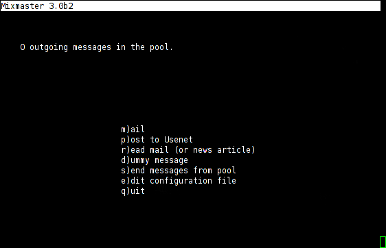
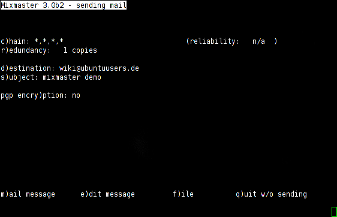

Mixmaster
Archivierte Anleitung
Dieser Artikel wurde archiviert, da er - oder Teile daraus - nur noch unter einer älteren Ubuntu-Version nutzbar ist. Diese Anleitung wird vom Wiki-Team weder auf Richtigkeit überprüft noch anderweitig gepflegt. Zusätzlich wurde der Artikel für weitere Änderungen gesperrt.
Zum Verständnis dieses Artikels sind folgende Seiten hilfreich:
Mixmaster  ist ein anonymer Typ-II-Remailer für die Konsole. Er erlaubt es, E-Mails und Usenet-Posts anonym zu versenden, indem sämtliche Header-Daten des Senders aus der E-Mail entfernt werden und die E-Mail dann verschlüsselt über beliebig viele Remailer-Server (Knoten) geleitet wird, bis sie zum tatsächlichen Empfänger versandt wird. Die einzelnen Knoten wissen dabei (genau wie im Tor-System) nur, von wo die E-Mail zuletzt herkommt und wohin sie sie weiterleiten sollen. Nur der erste Knoten weiß, von wem sie stammt und nur der letzte, wohin sie geht. Somit garantiert das Mixmaster-System ein hohes Maß an Anonymität für den E-Mail-Verkehr.
ist ein anonymer Typ-II-Remailer für die Konsole. Er erlaubt es, E-Mails und Usenet-Posts anonym zu versenden, indem sämtliche Header-Daten des Senders aus der E-Mail entfernt werden und die E-Mail dann verschlüsselt über beliebig viele Remailer-Server (Knoten) geleitet wird, bis sie zum tatsächlichen Empfänger versandt wird. Die einzelnen Knoten wissen dabei (genau wie im Tor-System) nur, von wo die E-Mail zuletzt herkommt und wohin sie sie weiterleiten sollen. Nur der erste Knoten weiß, von wem sie stammt und nur der letzte, wohin sie geht. Somit garantiert das Mixmaster-System ein hohes Maß an Anonymität für den E-Mail-Verkehr.
Installation¶
Folgendes Paket muss aus den Paketquellen installiert [1] werden:
mixmaster (universe [2] )
 mit apturl
mit apturl
Paketliste zum Kopieren:
sudo apt-get install mixmaster
sudo aptitude install mixmaster
Mixmaster mit Postfix¶
Mixmaster benutzt standardmäßig Postfix, um E-Mails zu verschicken. Damit Postfix richtig funktioniert, sollte keine mix.cfg (s.u.) erstellt, bzw eine bereits vorhandene gelöscht oder umbenannt werden, da es sonst zu Störungen kommen kann, zumindest muss die Zeile SENDMAIL /usr/sbin/postfix auskommentiert werden (mit "#"). Dabei gibt es zwei Möglichkeiten. Wie man Postfix jeweils richtig konfiguriert kann im Postfix-Artikel nachgelesen werden.
E-Mails direkt vom PC zum Remailer¶
Am einfachsten funktioniert dies, indem man Postfix als "Satellite System" konfiguriert. Bei dieser Methode gibt es aber zwei Punkte zu bedenken:
manche ISPs blockieren diesen SMTP-Traffic von ihren Kunden, um Spam abzuwehren
manche Remailer blockieren E-Mails, die von dynamischen IPs zugestellt werden, um Spam abzuwehren
Es gilt also zu überprüfen, ob diese Konfiguration bei dem verwendeten Internet-Provider funktioniert.
E-Mails über einen externen SMTP-Service (z.B. den SMTP-Server des E-Mail-Providers) zum Remailer¶
Bei dieser Methode konfiguriert man Postfix am besten als "Smart Host". Hier benutzt man nun einen externen SMTP-Dienst der die E-Mail an einen Remailer weiterleitet, z.B. den SMTP-Server des eigenen E-Mail-Providers zum Remailer, oder den eines anderen Anbieters (z.B. gmx, oleco,..). Wenn man den des eigenen ISPs wählt, hat man den Nachteil, dass dieser meist nur E-Mails aus dem eigenen IP-Bereich akzeptiert, was bedeutet, dass es nur solange funktioniert wie man bei sich zu Hause ist.
Mixmaster ohne Postfix¶
Man kann Mixmaster auch ohne Postfix über einen externen SMTP-Service benutzen. Dazu muss man eine Konfigurationsdatei erstellen und dort die nötigen SMTP-Daten eintragen.
Hinweis:
Unter Sicherheits-Aspekten spielt es keine Rolle, ob man den eigenen ISP wählt oder den SMTP-Dienst eines anderen Anbieters und ob man Postfix benutzt oder nicht. In keinem Fall wird eine dieser Parteien erfahren, wer der eigentliche Empfänger der E-Mail ist oder ihren Inhalt. Die Benutzung von Postfix hat den Vorteil, dass man (zum Beispiel mit tail) in der Datei /var/log/mail.info nachsehen kann, ob die E-Mail erfolgreich zum ersten Knoten gesandt wurde. Wenn man Postfix benutzt, muss man vor dem Versenden durch Mixmaster natürlich den Postfix-Dienst starten [3] , falls er nicht bereits läuft.
Benutzung¶
Vor dem ersten Start sollten unbedingt noch die Remailer-Tabellen aktualisiert werden. Dazu führt man mit Root-Rechten [4] im Terminal [5] den folgenden Befehl aus:
mixmaster-update --verbose
Dies sollte man alle paar Tage in regelmäßigen Abständen wiederholen, damit man immer aktuelle Remailer in seiner Liste hat. Jetzt kann man Mixmaster über den Befehl:
mixmaster
starten. Nach dem Start hat man folgende Möglichkeiten: 
| Taste | Funktion |
| M | Verfasse eine E-Mail. |
| P | Verfasse einen Usenet-Post. |
| R | Lese eine E-Mail oder Usenet-Nachricht aus einer Datei ein. |
| D | Vefasse eine Dummy-Nachricht. |
| S | Sende alle verfassten Nachrichten aus dem Pool. |
| E | Verändere die Konfigurationsdatei. Diese muss vorher erstellt worden sein. |
| Q | Beende Mixmaster. |
E-Mail/Usenet-Posting verfassen¶
Zuerst wird man nach der Empfänger-Adresse (oder der Newsgroup in die man posten möchte) gefragt und danach nach dem Betreff. Hat man beides eingegeben, kommt man zum Hauptmenü. Hier hat man folgende Möglichkeiten:

| Taste | Funktion |
| C | Hier kann man die Anzahl der Remailer-Knoten wählen, entweder direkt mit ihrem Namen oder mit *, um sie zufällig zu wählen. Es sollten mindestens 4 Knoten ausgewählt sein, um die Anonymität zu gewährleisten. |
| R | Legt die Anzahl der Kopien der E-Mail fest, die versandt werden. Hier sollten mehr als 3 gewählt werden, um sicher zu stellen, dass keine unterwegs verloren geht. In manchen Quellen steht, dass 5 eine optimale Anzahl ist. Wenn mehr als eine Kopie ausgewählt wird, müssen die Knoten zufällig ausgewählt werden. |
| D | Hier kann man nochmals die Empfänger-Adresse bzw. Newsgroup ändern. |
| S | Hier kann man nochmals den Betreff ändern. |
| Y | Verschlüsselung mit PGP, falls man Mixmaster zuvor dementsprechend konfiguriert und die Keyrings angegeben hat. |
| E | Hier kann man den Nachrichten-Text erstellen oder verändern. Dies funktioniert über Vim. |
| F | Es muss der komplette Pfad zu einer Datei angegeben werden. Handelt es sich um eine Textdatei, wird der Text als Nachrichtentext genommen. Handelt es sich um eine andere Datei, wird sie als Attachment gesendet. Man sollte jedoch daran denken, dass viele Remailer-Nodes keine großen Nachrichten erlauben (Panta Rhei z.B. eine maximale Größe von 30 kb). Mixmaster ist nicht dazu gedacht, größere Dateien anonym zu versenden, sondern ausschließlich für Texte und Nachrichten. |
| M | Beendet den Dialog und sendet die Nachricht in den Pool. |
| Q | Beendet den Dialog und verwirft die Nachricht. |
Hat man alles eingegeben und die M -Taste gedrückt, liegt die E-Mail im Pool und man kommt zurück auf den Hauptbildschirm. Dort kann man nun durch drücken der S -Taste alle E-Mails im Pool verschicken.
Auf ein Usenet Posting antworten¶
Will man auf ein Posting in einer Newsgroup antworten, muss man dazu die richtige Stelle angeben, an der die Antwort eingefügt werden soll. Man betrachtet dazu den Header des Postings, hinter dem man möchte, dass die Antwort erscheinen soll. Dort befinden sich zwei wichtige Zeilen. Zum einen die Message-ID und zum anderen die References-Zeile. Diese können beispielsweise so aussehen:
References: <posting1@gmx.de> Message-ID: <posting2@t-online.de>
Um nun auf diese Nachricht zu antworten, fügt man im Fenster zum Erstellen oder Verändern des Nachrichtentextes direkt unter die Subject-Zeile eine neue Zeile References mit dem Inhalt zuerst der References-Zeile der Nachricht, auf die man Antworten möchte, und daran angehängt die Message-ID dieser Nachricht. Für obiges Beispiel würde die Zeile dann so aussehen:
References: <posting1@gmx.de> <posting2@t-online.de>
Jetzt kann man den Nachrichtentext verfassen und das Posting abschicken.
Konfigurationsdatei ändern¶
Zuerst muss man im Homeverzeichnis im versteckten Ordner .Mix eine neue Datei mix.cfg erstellen. In dieser kann man nun mit einem Editor [6] optionale Einstellungen vornehmen:
| Option | Beispiel | Bedeutung |
SMTPRELAY | smtp.web.de | externen SMTP-Server |
SMTPUSERNAME | ubuntu | SMTP-Username zur Authentifizierung |
SMTPPASSWORD | dfs743.sf4-91s | SMTP-Passwort zur Authentifizierung |
PGPPUBRING | /home/user/.gnupg/pubring.gpg | Pfad zur pubring.gpg |
PGPSECRING | /home/user/.gnupg/secring.gpg | Pfad zur secring.gpg |
NUMCOPIES | 5 | Legt die Anzahl der Kopien fest, die verschickt werden. |
CHAIN | *,*,*,* | Gibt die Anzahl der Remailer an und welche Remailer an welcher Stelle verwendet werden sollen.* steht für zufällige Auswahl. |
DISTANCE | 2 | Wieviele Remailer zwischen einem Remailer und seinem nächsten Auftauchen in der Kette liegen müssen. Sollte mindestens auf 2 stehen. |
MINREL | 70 | Wieviel Prozent der Zeit alle verwendeten Server Online sein müssen. |
RELFINAL | 80 | Dasselbe wie MINREL, nur ausschließlich für den letzten Remailer in der Kette. |
MAXLAT | 5 | Maximale Anzahl der Stunden, die ein Remailer die E-Mail vor der Weiterleitung aufbewahren darf. |
MAILtoNEWS | mail2news@nym.alias.net | Gateway zum Usenet, an welches der letzte Remailer die E-Mail versendet. |
Eine mix.cfg könnte also beispielsweise so aussehen: mix.cfg 
Links¶
Remailer Netiquette
 - Remailer Netiquette von Kai Raven
- Remailer Netiquette von Kai Raven Panta-Rhei
- die größte und älteste Seite über Remailer Mixmaster
- offizielle Mixmaster-Webseite
- Erstellt mit Inyoka
-
 2004 – 2017 ubuntuusers.de • Einige Rechte vorbehalten
2004 – 2017 ubuntuusers.de • Einige Rechte vorbehalten
Lizenz • Kontakt • Datenschutz • Impressum • Serverstatus -
Serverhousing gespendet von